Qué sobra en Mes, Semana y Hoy, medido en el móvil de 412 px con un octubre de verdad (6 guardias, 4 eventos, 3 hábitos), y tres modelos para arreglarlo: las fichas y el carné de abono, estáticos y hechos con el kit de /anatomy, y la carretera del mes, el modelo alternativo en primera persona. Nada de esto está construido en la app: son maquetas sobre la app real, a la espera de tu visto bueno.
1 911 → 645 px
Mes · alto de la pantalla
de 2,1 a 0,7 pantallas · 62 → 32 botones
1 224 → 804 px
Semana · alto de la pantalla
de 1,3 a 0,9 pantallas · 28 → 10 botones
1 586 → 1 393 px
Hoy · con la carretera dentro
37 → 18 botones · 1 059 px sin ella
1 · Lo medido, bloque a bloque
Las tres pantallas, conducidas de verdad a 412 × 915 con el mes de ejemplo y la hora a las 10:24 de un martes de guardia. Cada fila es un bloque de la pantalla con su alto, sus botones y lo primero que dice. Las cifras de «después» salen de la misma app con los recortes aplicados por encima (CSS y DOM), no de un dibujo.
Mes (plana)
px
botones
qué hace
cabecera + selector de mes + hoy · editar · 🖨
58
4
se queda
aviso «Mantén pulsado un día»
76
1
sobra: un aviso de una vez ocupa sitio todos los días hasta que lo cierras
abono (2 de 6 · 186 h · 2 findes)
99
0
se queda, pasa a ser el carné
botón Isométrica
36
1
se queda (o se va a la cabecera)
cuadrícula de 6 semanas (42 casillas de 140 px)
845
42
sobra la mitad: la semana ya pasada, la sexta semana y 100 px de aire por casilla
leyenda (9 entradas)
50
0
sobra: explica unas fichas que se explican solas
«Eventos de octubre»
303
5
sobra: ya están en las casillas y en «Próximos» de Hoy
«Este mes» (servicio, cupo, 3 cifras, vacaciones)
298
9
sobra en la pantalla: cuenta las guardias por segunda vez (6/6 frente a 2 de 6) y se toca una vez al mes
total
1 911
62
2,1 pantallas · 299 palabras
Semana (plana)
px
botones
qué hace
rango de fechas + «7 días» + ⓘ
40
5
se queda
Agenda / Por horas
42
2
tres mandos seguidos (118 px) antes de ver nada: este, el de arriba y el de Isométrica
botón Isométrica
36
1
se funde con el de arriba en una sola fila
tablón (resumen, 8 filas, leyenda)
527
0
se queda; la leyenda (41 px) se va
tarjeta del día que tocas
163
2
se queda
«Hábitos de la semana»
273
17
sobra: el tablón ya lleva los sellos de hábitos por día, «Para hoy» los marca y Más › Hábitos los edita
«mi rutina por tipo de día»
30
1
un botón suelto: va al menú ⓘ
total
1 224
28
1,3 pantallas · 216 palabras
Hoy (conductor)
px
botones
qué hace
cabecera, ‹ Lun · Mié ›, 🌿, ＋ Añadir, estado del día
80
4
se queda
cuenta atrás («finde libre en 4 d · examen en 14 d»)
32
0
lo dice la carretera
Conductor / Reloj / Línea y debajo ⇄ Estación
80
4
dos selectores apilados para una sola elección
el conductor (parabrisas + salpicadero)
276
6
se queda
«Tu semana pasada» (lunes y martes)
75
0
se queda
asistente: ¿cómo amaneces? + agua + banco
482
19
más alto que el propio día: tres preguntas, cada una con su párrafo y sus botones
«Para hoy»
222
3
se queda
«Próximos» (4 eventos)
192
1
lo dice la carretera (y lo repetía «Eventos de octubre»)
total
1 586
37
1,7 pantallas · 287 palabras
Mes, hoy · 1 911 px
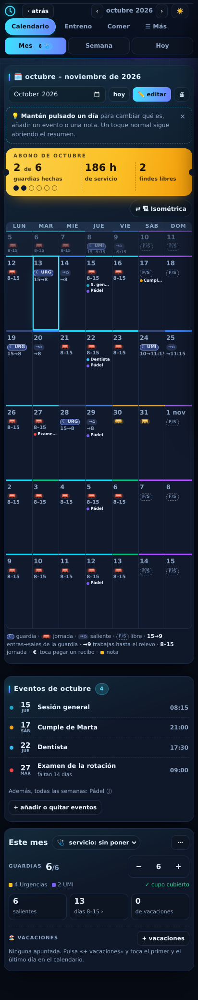
Hoy, hoy · 1 586 px
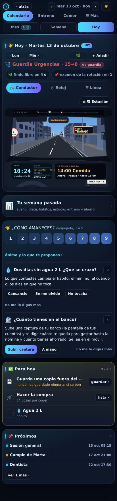
2 · Qué sobra y por qué
El calendario dice las mismas cosas varias veces y deja aire donde no hay nada que decir.
Las guardias se cuentan tres veces en Mes. En la pestaña («Mes 6»), en el abono («2 de 6 hechas») y en «Este mes» («6/6 puestas»). Dos números distintos para una pregunta que se hace una vez: ¿cuántas me quedan?
Los eventos salen en tres sitios. En la casilla del día, en «Eventos de octubre» (303 px) y en «Próximos» de Hoy (192 px). Un evento nuevo cuesta 500 px de pantalla.
La cuadrícula es aire. 42 casillas de 140 px con unos 40 px de contenido: el 70 % de los 845 px está vacío. Y enseña seis semanas cuando las que importan son esta y las cuatro siguientes.
El texto repite a la ficha. La casilla pone la ficha de jornada y «8–15» debajo, 20 veces al mes, para decir lo de siempre. Las horas solo informan cuando no son las de siempre («15→8», «→11:15»).
Los hábitos viven en cuatro sitios. «Para hoy», la tarjeta del día en Semana, «Hábitos de la semana» y Más › Hábitos. La de Semana es la más grande (273 px, 17 botones) y la que menos se toca.
Los mandos se apilan. Semana tiene tres filas de mandos seguidas (118 px) y Hoy dos (80 px) antes de enseñar nada. Cada una es una decisión que ya tomaste.
El asistente manda más que el día. En Hoy, 482 px y 19 botones de preguntas (¿cómo amaneces?, el agua, el banco) frente a 276 px de conductor. Cada pregunta trae su párrafo de explicación, que ya leíste el primer día.
3 · Fig 1 · Las fichas, estáticas
Los seis objetos del tablero isométrico (autobús rojo la jornada, violeta el día de fuerza, búho azul noche la guardia con su aro ámbar o violeta, la cochera con la flecha el saliente, el árbol el libre, el autocar las vacaciones), pero fijos: un <symbol> por ficha, 73 KB en total, dibujados con el kit de /anatomy y pintados en todo el calendario. Frente a los 300 KB de la vista isométrica viva, que además tarda en montarse.
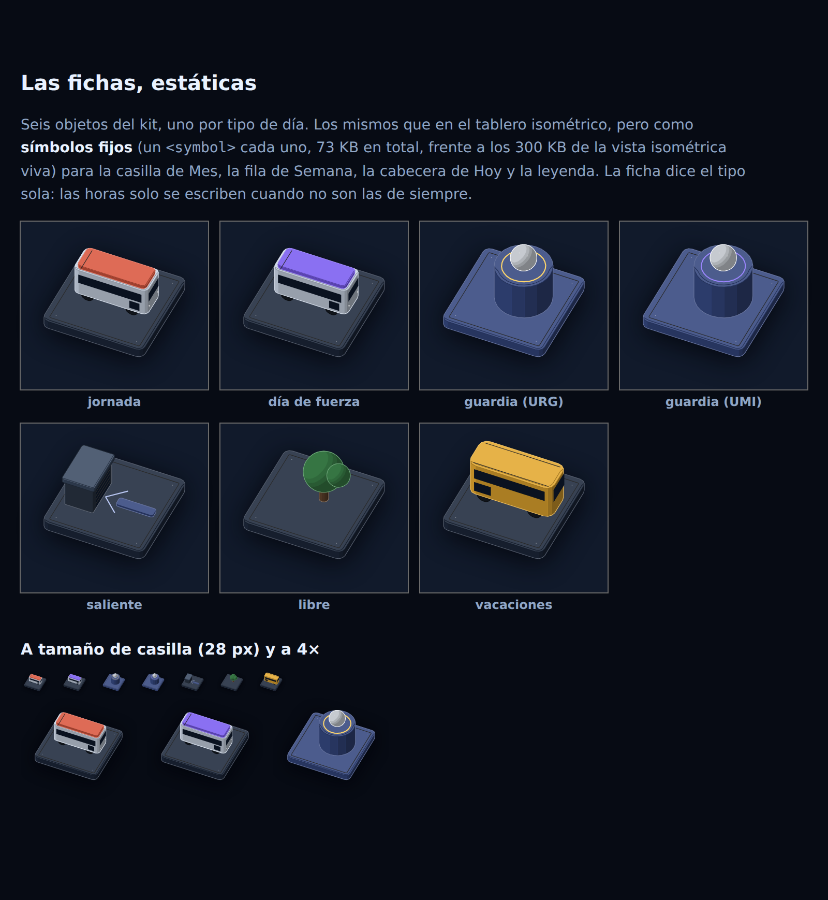
Dónde se usan. En la casilla de Mes en vez de emoji + texto; en la fila del tablón de Semana en vez del autobús dibujado a mano; en la cabecera de Hoy junto al nombre del día; y en la leyenda, que pasa a ser un botón «?» porque la ficha ya dice lo que es.
La regla de las horas. Con la ficha puesta, la casilla solo escribe la hora cuando no es la de siempre: «15→8» en la guardia, «→8» y «→11:15» en el saliente, «10→11:15» en la UMI. La jornada de 8 a 15 no se escribe: es el autobús rojo. Son 20 líneas de texto menos al mes.
4 · Fig 2 · El carné de abono
La tarjeta de transporte del conductor. Junta en un solo objeto lo que hoy son cuatro bloques de Mes: el abono (99 px), «Este mes» (298 px), la leyenda (50 px) y, en su versión completa, la cuadrícula entera (845 px). Arriba, el mes y el servicio grabados; a la derecha, las tres cifras; abajo, la regla del mes con la aguja de hoy; y en la versión completa, el mes en 5×7 con la marca de cada tipo de día y un agujero taladrado por cada día ya pasado, como en un abono de verdad.
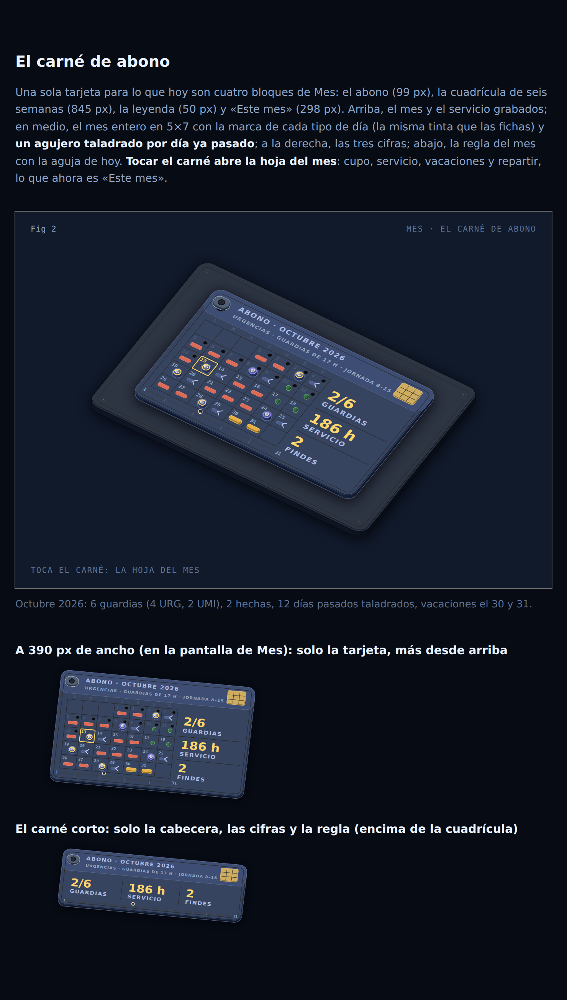
Tocar el carné abre la hoja del mes: el cupo con su −/+, el servicio, las vacaciones, «repartir las que faltan» y el menú ⋯. Es exactamente lo que hoy es «Este mes», pero fuera de la pantalla hasta que lo pides.
A · el carné corto (116 px) encima de la cuadrícula
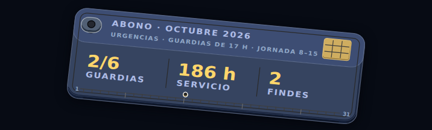
B · el carné completo (194 px) como vista de un vistazo
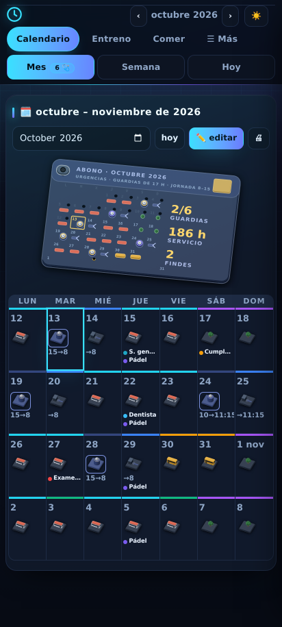
Te propongo la A: el carné corto encima de la cuadrícula de cinco semanas. La B dibuja el mes dos veces (en el carné y en la cuadrícula), y solo tiene sentido si el carné completo sustituye al tablero isométrico vivo como vista «de un vistazo»: un toque en una marca del carné abriría ese día, igual que hoy una baldosa.
5 · Fig 3 · La carretera del mes, en primera persona
El modelo alternativo, como el conductor de Hoy: la misma cabina (parabrisas, pilares, salpicadero, volante) y la misma cámara, pero la carretera no es el día, son los días que vienen. Cada día es un mojón al borde de la carretera con su número y la cabeza del color del tipo. Lo que toca está en la carretera a esa distancia:
La guardia es un túnel: la noche de trabajo, se entra por la tarde y se sale a la mañana siguiente. Encima, el cartel: «GUARDIA URG · lun 19 · 15:00 → 9:15 · en 6 días».
El finde libre es un área de descanso, con su carril de entrada, la mesa y los árboles. El cartel verde dice «sáb 17 – dom 18».
Las vacaciones son la salida a la playa: el pórtico verde sobre la carretera, «SALIDA 30 · PLAYA ↗», y la palmera.
Cada evento es una señal azul en su poste, con el nombre y la hora. Alternan a izquierda y derecha para no taparse.
La jornada es la ciudad a los lados, como en Hoy. Más baja, para no tapar los carteles.
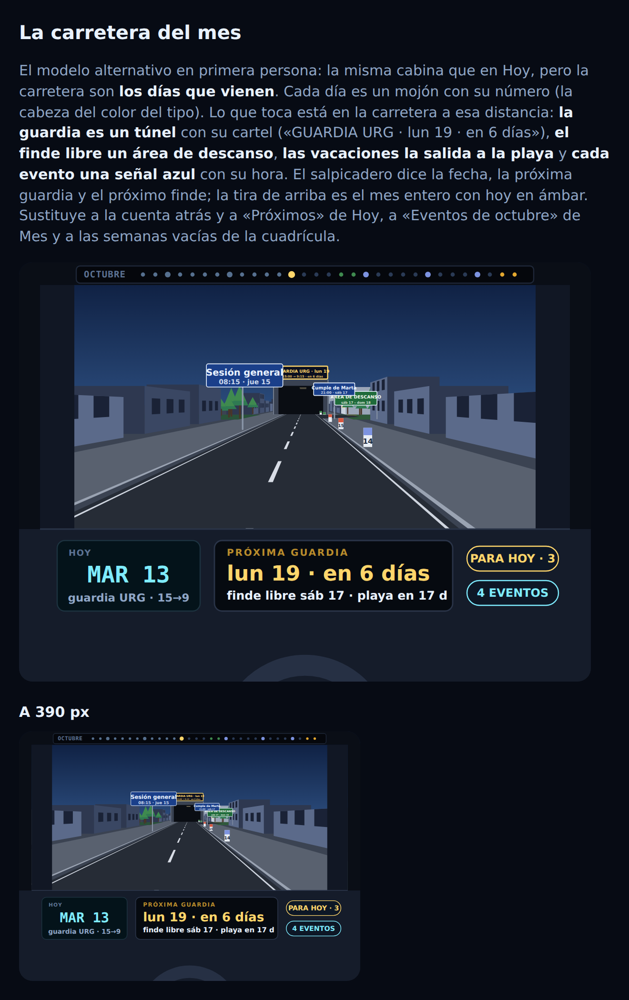
El salpicadero no dice la hora: dice la fecha, «PRÓXIMA GUARDIA · lun 19 · en 6 días», el próximo finde libre y la playa. La tira de arriba es el mes entero: 31 marcas, hoy en ámbar, las guardias en azul, lo libre en verde, la playa en ámbar claro. En el parabrisas caben unos doce días; el resto está en la tira.
Qué sustituye. La cuenta atrás de Hoy (32 px), «Próximos» de Hoy (192 px) y «Eventos de octubre» de Mes (303 px): tres bloques que decían lo mismo con listas. Y da lo que ninguno daba: la distancia. Un evento a tres días se ve grande y uno a tres semanas, pequeño y lejos.
Si se construye, se movería con el dedo (arrastrar hacia delante = avanzar días, como la hora en el conductor), tocar un mojón o un cartel abriría ese día, y la tira de arriba sería un mapa que se toca. Hoy es un fotograma fijo de 37 KB, dibujado con la proyección del conductor, sin kit: a 390 px ocupa 290 px de alto, lo mismo que el conductor.
Dónde vivir. Propongo que sea la tarjeta «Lo que viene» de Hoy, en el sitio de «Próximos», y a la vez la segunda vista de Mes (en vez del tablero isométrico vivo, o además, con el mismo botón ⇄). En Semana no: la semana ya es el tablón, y la carretera a siete días se quedaría casi vacía.
6 · Mes, después
Antes · 1 911 px · 2,1 pantallas · 62 botones
Después (A) · 645 px · 0,7 pantallas · 32 botones
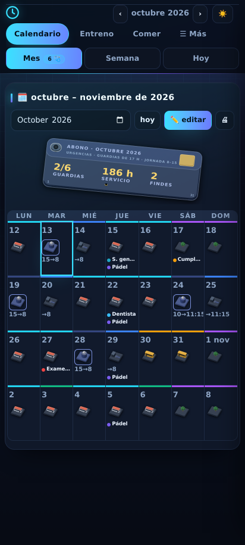
M1 · El carné corto en vez del abono: las mismas tres cifras más el servicio y la regla del mes. Tocarlo abre la hoja del mes.
M2 · «Este mes» se va a la hoja del mes (−298 px, −9 botones): cupo, servicio, vacaciones, repartir, ⋯. Se tocan una vez al mes; no hace falta que estén en la pantalla.
M3 · Cinco semanas, no seis, y la casilla a su contenido (92 px de mínimo en vez de 140): esta semana y las cuatro siguientes. La semana pasada se ve bajando un mes con ‹. De 845 px a 388.
M4 · Fichas en vez de emoji + texto, y las horas solo cuando no son las de siempre.
M5 · El aviso de mantener pulsado pasa a ser un toast que sale una vez (−76 px), y la leyenda, un botón «?» en la cabecera (−50 px).
M6 · «Eventos de octubre» se quita (−303 px): los eventos están en la casilla y en la carretera.
Imprimir no cambia: el papel sigue siendo la cuadrícula de seis semanas desde la semana en la que estás, sin carné ni botones.
7 · Semana, después
Antes · 1 224 px · 1,3 pantallas · 28 botones
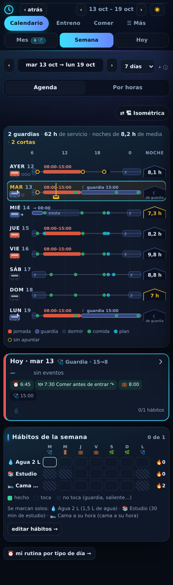
Después · 804 px · 0,9 pantallas · 10 botones
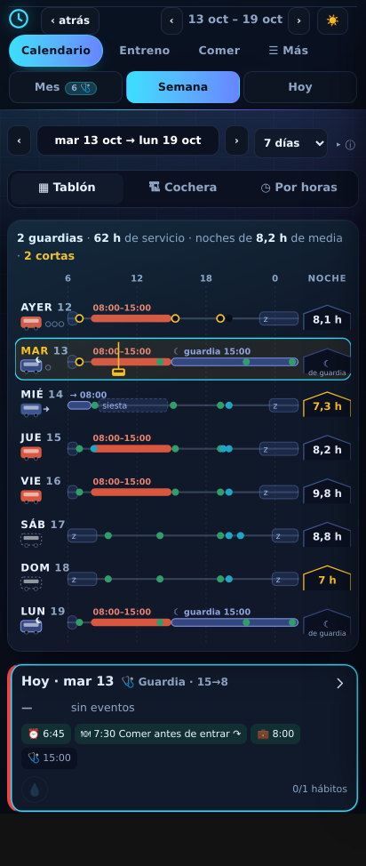
S1 · Una sola fila de mandos: «▦ Tablón · 🏗 Cochera · ◷ Por horas» en el sitio de Agenda/Por horas, y fuera el botón suelto de Isométrica (−36 px).
S2 · «Hábitos de la semana» se quita (−273 px, −17 botones). Los sellos por día siguen en el tablón, se marcan en «Para hoy» y en la tarjeta del día, y se editan en Más › Hábitos. La sugerencia («los días de guardia no has hecho…») pasa a la tarjeta del asistente en Hoy, que es donde están las demás.
S3 · «mi rutina por tipo de día» entra en el menú ⓘ de la cabecera (−30 px).
S4 · La leyenda del tablón se quita (−41 px): los colores son los del conductor y los de Mes, y el botón «?» los explica.
Toda la pantalla cabe en una: el tablón entero y la tarjeta del día sin bajar.
8 · Hoy, después
Antes · 1 586 px · 1,7 pantallas · 37 botones
Después · 1 393 px · 1,5 pantallas · 18 botones
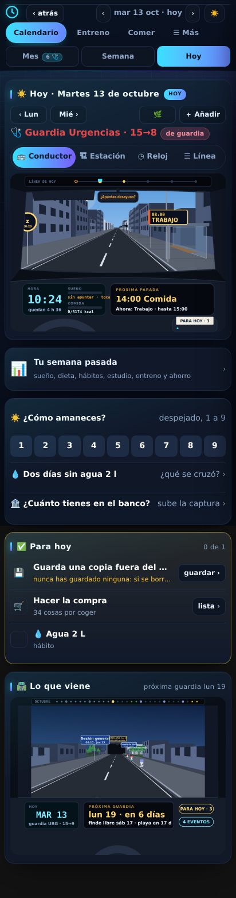
H1 · Una sola fila: «🚌 Conductor · 🏗 Estación · ◷ Reloj · ☰ Línea». La Estación es un modo más, no una vista dentro de un modo (−36 px, un selector menos).
H2 · El asistente en tres líneas (482 → 220 px, 19 → 0 botones hasta que tocas): «¿Cómo amaneces?» con el 1–9 en una fila, y cada pregunta del asistente en una línea con su chevron. El párrafo de explicación y los botones de respuesta se abren al tocar.
H3 · La cuenta atrás se quita (−32 px): la carretera la lleva en el salpicadero.
H4 · «Próximos» pasa a ser «Lo que viene», la carretera (334 px con el título). Es el único bloque que crece, y a cambio se van tres.
Sin la carretera (si prefieres que viva solo en Mes), Hoy se queda en 1 059 px, 1,2 pantallas.
9 · Qué gana la funcionalidad
Una pregunta, un sitio. ¿Cuántas guardias me quedan? El carné. ¿Qué viene? La carretera. ¿Qué día es cada uno? La ficha. ¿Qué hago hoy? Para hoy. Hoy cada una se contesta en dos o tres sitios con números que no siempre coinciden.
Lo que se toca una vez al mes, detrás de un toque. El cupo, el servicio y las vacaciones salen de la pantalla y entran en la hoja del mes, a un toque del carné. Repartir las guardias que faltan sigue siendo un botón, en esa hoja.
La distancia se ve. En una lista, un evento a 3 días y otro a 23 ocupan lo mismo. En la carretera, el de 3 días es grande y el de 23 está lejos. Es la misma idea que el conductor para el día, llevada al mes.
Menos modos que elegir. Semana pasa de tres mandos a uno; Hoy, de dos selectores a uno. Las vistas isométricas siguen ahí, como un modo más, no como una capa encima del modo.
La cuadrícula se queda para lo que es: tocar un día, mantenerlo pulsado para cambiarlo, marcar vacaciones del primer al último día e imprimir.
Carga más ligera. Las fichas estáticas (73 KB) sustituyen a los emoji + texto sin cargar la vista isométrica (300 KB); el carné corto son 17 KB; la carretera fija, 37 KB.
10 · Cómo lo construiría
Tanda 1 · Mes
Fichas estáticas, carné corto con la hoja del mes, cinco semanas con la casilla a su contenido, las horas solo cuando no son las de siempre, fuera el aviso, la leyenda a «?» y fuera «Eventos de octubre». Adaptar las pruebas 48, 77, 113, 207, 242 y 276. Media jornada.
Tanda 2 · Semana y Hoy
Una fila de mandos en cada una, fuera «Hábitos de la semana» (la sugerencia al asistente), «mi rutina» al ⓘ, el asistente en tres líneas, fuera la cuenta atrás. Pruebas 275 y las del asistente. Media jornada.
Tanda 3 · La carretera viva
Un módulo como el conductor (fig/carretera.js): se arrastra por días, tocar un mojón abre el día, la tira de arriba es el mapa. En Hoy como «Lo que viene» y en Mes como segunda vista. Una jornada.
Cada tanda se mide, pasa la suite entera y se despliega a main por separado, como las anteriores.
11 · Lo que hay que decidir
Mes: ¿A o B? A: carné corto encima de la cuadrícula de cinco semanas (lo que te recomiendo). B: carné completo como vista de un vistazo, en lugar del tablero isométrico vivo.
La carretera: ¿en Hoy, en Mes o en los dos? Si solo en Mes, Hoy se queda en 1 059 px y «Próximos» vuelve como lista corta.
¿«Hábitos de la semana» fuera de Semana? Es el recorte más grande de esa pantalla (273 px) y el que más cambia una costumbre: marcar la semana entera de un vistazo. Si lo quieres mantener, lo plegaría a una fila por hábito sin leyenda ni texto (unos 120 px).
¿El tablero isométrico de Mes se queda? Si la carretera entra como segunda vista de Mes y el carné lleva las cifras, el tablero dice lo mismo que la cuadrícula y la canceladora lo mismo que el carné.
Supuestos
Las medidas de «después» son la app real con los bloques ocultos o sustituidos por CSS y DOM; al construirlo, los altos pueden variar en ±20 px por los márgenes de las tarjetas.
El mes de ejemplo es octubre de 2026 con 6 guardias (4 URG, 2 UMI), vacaciones el 30 y 31, cuatro eventos con fecha, un pádel semanal y tres hábitos; «hoy» es el martes 13, de guardia.
Los días «de siempre» son los de la jornada de diario puesta en ajustes (8–15); cualquier otra hora sí se escribe en la casilla.
La carretera enseña unos doce días en el parabrisas; más allá, en la tira. En un mes sin guardias ni eventos sería ciudad y mojones, que es lo que es ese mes.
La hoja del mes (detrás del carné) reúne «Este mes» tal cual: no se quita ninguna función, solo se saca de la pantalla.
Las fichas estáticas pesan 73 KB porque las esferas y los cilindros del kit tienen muchas caras; se puede bajar a la mitad con menos pasos sin que se note a 30 px.
Cinco preguntas para cerrar
¿Cuántas veces se cuentan las guardias en la pantalla de Mes de hoy, y cuál es la cifra que importa?respuesta
Tres: la pestaña, el abono y «Este mes». La que importa es «hechas de las del cupo» (2 de 6), que es la que se queda en el carné.
¿Qué parte de los 845 px de la cuadrícula está vacía, y por qué?respuesta
Unos 100 de los 140 px de cada casilla (el 70 %): la casilla tiene altura mínima de pantalla y seis semanas, cuando el contenido ocupa 40 px y las semanas que importan son cinco.
¿Qué es la guardia en la carretera del mes, y por qué eso y no una señal?respuesta
Un túnel: se entra por la tarde y se sale a la mañana siguiente, como la noche de trabajo. Una señal es un aviso; el túnel es un tramo que hay que atravesar.
¿Cuándo escribe horas la casilla de Mes con las fichas puestas?respuesta
Solo cuando no son las de siempre: guardia «15→8», saliente «→8», UMI «10→11:15». La jornada de 8 a 15 es el autobús rojo y no se escribe.
¿A dónde va «Este mes» si se quita de la pantalla?respuesta
A la hoja del mes, que se abre tocando el carné: cupo, servicio, vacaciones, repartir y el menú ⋯. No se pierde ninguna función.